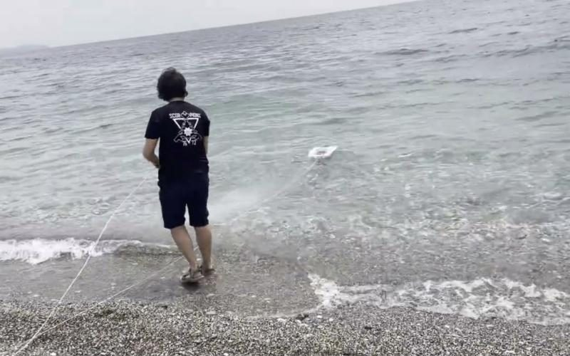
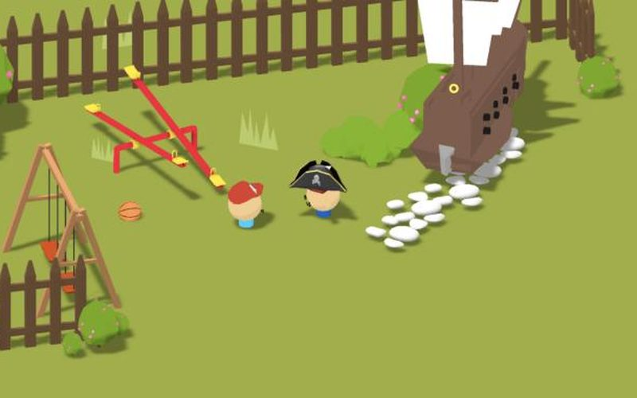
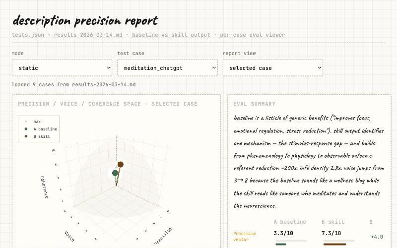
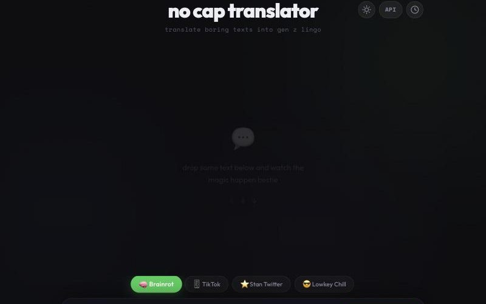
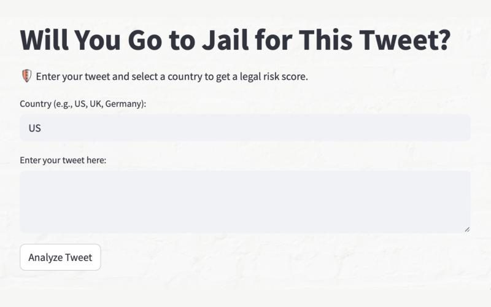
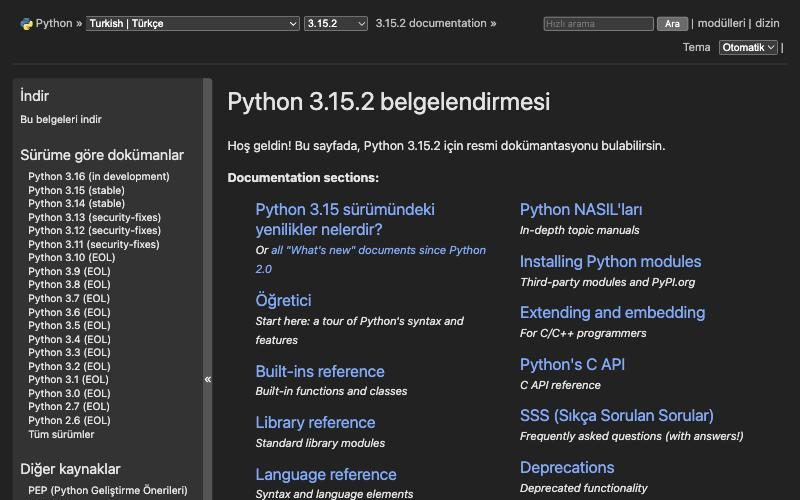

Projects

Underwater ROVDeep-sea robot that dives 200m for 6+ hours with a live video feed.

Los ProblemosGame that teaches disinformation literacy, funded by the US State Department.

Ultimate DescriberHelps AI agents write better while sharpening human thinking.

No-CapsTranslates boring text into Gen-Z lingo.

Tweet Legal RiskTells you if a tweet could land you in jail.

Python Docs in TurkishOfficial Python docs translation; about 300,000 readers in week one.
- Vanderbilt Faculty Donations
Award-winning data analysis for The Vanderbilt Hustler.
Research
- Polytopia Multi-agent strategy environment for RL and mechanistic interpretability. HackMIT 2025 grand prize.
- Fermionic ToolQIT Python library for fermionic quantum information theory.
- Heisenberg XX Chain Quantum effects in D. radiodurans nitric oxide synthesis.
- AR for Geometry Augmented reality for 3D spatial reasoning. 3rd nationally, TÜBİTAK.
- Antarctic Heavy Metal Hunter Robot that detects heavy metals in polar environments.